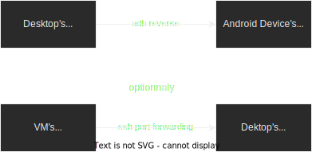
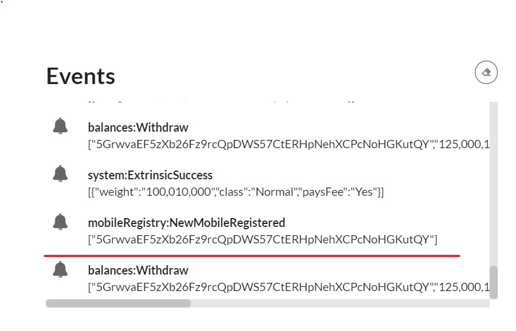
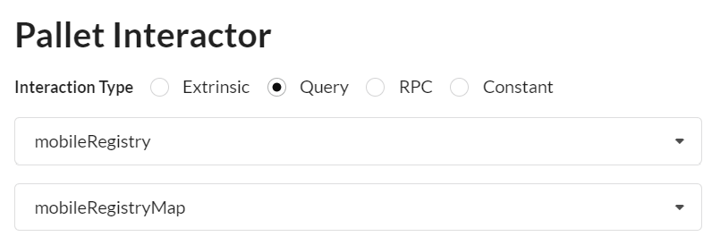
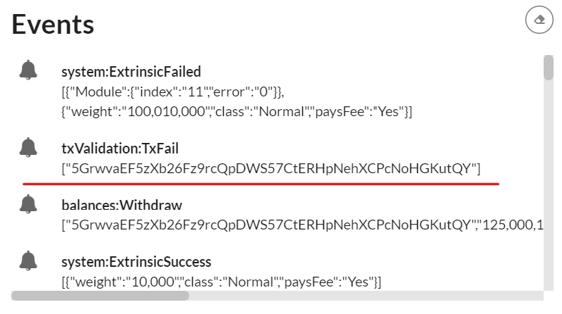

M5 Demo Tutorial
prerequiste
| Install Docker | Install Podman |
|---|---|
| docker | podman |
| docker-compose | podman-compose |
Set-up Demo
1. Launch the blockchain
Create a directory
example:
mkdir blockchain_demo
and add the following docker compose configuration file: docker-compose.yml in it.
Then start docker or podman
sudo service docker start
and then
cd blockchain_demo
and launch the blockchain demo with ipfs and api services i.e. api_circuits
docker-compose down --timeout 1 && docker-compose up --force-recreate
replace
docker-composewithpodman-composeif you are using podman instead of docker
2. Launch a generic Substrate Fromt-end
Use the following substrate link to launch substrate front end
to connect to a locally running node
avoid some browser extensions that could generate interface issues
3. Install the wallet App i.e APK file on an android device or an emulator
3.1 Retrieve the APK file
Download the APK file
3.2 Install the APK
3.2.1 on an android device
How to install an APK on Android
WARNING: ensure that your device is configure for english.
3.2.2 on an windows emulator
Install the pixel 5 API 31 emulator with Virtual Device Manager or any x86_64 emulator.
3.4.2 Launch the emulator

Wait for the emulator to launch and emulated device to power on and drag and drop the APK file on the emulator to install the App.
4. Ensure that wallet can connect to the blockchain
The app is currently a dev version, so it expects the servers(RPC/WS, and IPFS) to be on localhost.
Which is obviously not the case when running on Device/Emulator.
To remedy adb reverse will expose "localhost of the desktop" as "localhost of the device".
Then, IF the blockchain(docker-compose) are NOT running on the desktop, you need to expose them. It can be done e.g. using ssh port forwarding, or through some other means.

Following is a configuration example with a windows desktop that run an android emulator and a WSL/VM running the blockchain(docker-compose)
adb is installed by default with android studio. So you just need to set-up its path on the OS used, if it is not already set.
Just connect the phone with an USB port or through WiFi( cf android studio).
on the OS where the emulator is running or the device is connected:
adb reverse tcp:5001 tcp:5001
adb reverse tcp:9944 tcp:9944
to expose server desktop on emulator
on the OS where blocchain is installed:
example if blockchain run on WSL2
export WSL_HOST_IP="$(tail -1 /etc/resolv.conf | cut -d' ' -f2)"
and use SSH to connect to the emulator running on windows or android devices connected to adb through USB port or WiFi:
ssh -N -R 9944:localhost:9944 -R 5001:localhost:5001 [windows_user_name]@$WSL_HOST_IP
TROUBLESHOOTING: start the front-end substrate link on your Device/Emulator to check it works properly. Otherwise fix network issues.
Demo purpose
The purpose of this demo is to show how a mobile wallet can use the Trusted Transaction Protocol client to confirm a transaction in a higly secure and hardware-backed trusted way on a smartphone device.
We focus on demonstrating:
- The registration of the mobile device on the blockchain mobile registry.
- The confirmation of a transaction through the TTVP protocol and the execution of the core low-level TTVP client on a smartphone device.
The purpose of the demo is not yet to show a fully functional wallet. We want to demonstrate that the TTVP protocol and Trusted Authentication and UI Layer is working as expected with our substrate based blockchain pallets to authenticate and confirm transactions or sensible operations.
Start The demo
1. Generate with ocwCircuits the configuration display circuit package
IMPORTANT: when interacting with pallets you MUST use the Signed button in blue to sign all the transactions, not SUDO, neither Unsigned
this is almost the same step one of the M2 delivery demo tutorial except that it generate of package of circuirts.
It set-up the configuration display circuit package used by the Garble Circuit Factory to generate randomized keyboard and message with one time code for each transactions.
1.1 Select ocwCircuits pallet

1.2 select submitConfigDisplayPackageSigned extrinsic

1.3 Sign transaction

1.3 The cid of the circuit package generated appears in Events

2. Launch Android App
Swipe from bottom to top and click on Wallet Interstellar

3. Send a Currency and wait for the Transaction confirmation screen to validate the transaction
3.1 Select currency and contact
Following is an explicit video showing how to send a curency to a contact on SEND screen.

3.2 Click on the blue Check icon
3.3 Wait for the transaction validation screen to appear and type the two-digits one-time-code
3.4 check Toast message order
- Processing...
- Registered
- [error] No circuits available after 10s; exiting!
[after taping one-time code digits]
- Validating transaction...
- Transaction done!
NOTE:
The wallet app is still work in progress and we have still some little issues to fix between the low level layer in rust and C++, especially on the renderer to connect with the Kotlin/Swift UI layer.
We want to avoid writting code that won't be used in the final version. For this reason we have made some little shortcut to demonstrate the execution of validation screen based on Garbled Circuits package eveluation.
As a result we do not show yet the inputted amount and the transaction beneficiary in the message. Although the transaction validation screen is fully functional.
Remark: Regarding the beneficiary of the transaction, we will implement a trusted beneficiary feature: a user will be able to create a trusted beneficiary contact whose public address will be registered in the blockchain through a sensitive operation message validation.
This makes the classic public key address substitution impossible for an attacker. Bad actors won't be able to replace a contact name by their own public key. Moreover, it makes the usage of the wallet much more user friendly and safer.
4. Check that mobile public key is registered on the mobile registry pallet
4.1 Copy the account key in MobileRegistry Events
When the mobile is registered with an account, its mobile public key is stored on mobileRegistryMap in MobileRegistry pallet and an event is generated

underline in red
4.2 select mobileRegistry pallet
and mobileRegistryMap Query (not extrinsic)

Then paste the copied account key

When the Query is completed you will see the mobile public key associated with the device as a result.
this public key is used to verify the hardware-backed signature of the transaction confirmation message that includes position typed by the user on the randomized keypad
5. Check Mobile user's ínput and transaction status on the front-end
Check the events
5.1 Transaction Success
you will see in the events
 if the one-time-code was entered properly
if the one-time-code was entered properly
5.2 Transaction Fail
you will see in the events  if the one-time-code was wrong